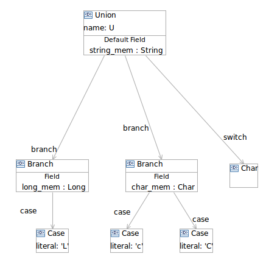

Unions contains Branches to hold a list of Cases along with a Field to apply if any of the Case literals matches with switch specification.
These Branches and Cases as placed in collapsable compartments are shown in the example below.
This example corresponds to the IDL:
union U switch (char) {
case 'L':
long long_mem;
case 'c':
case 'C':
char char_mem;
default:
string string_mem;
};